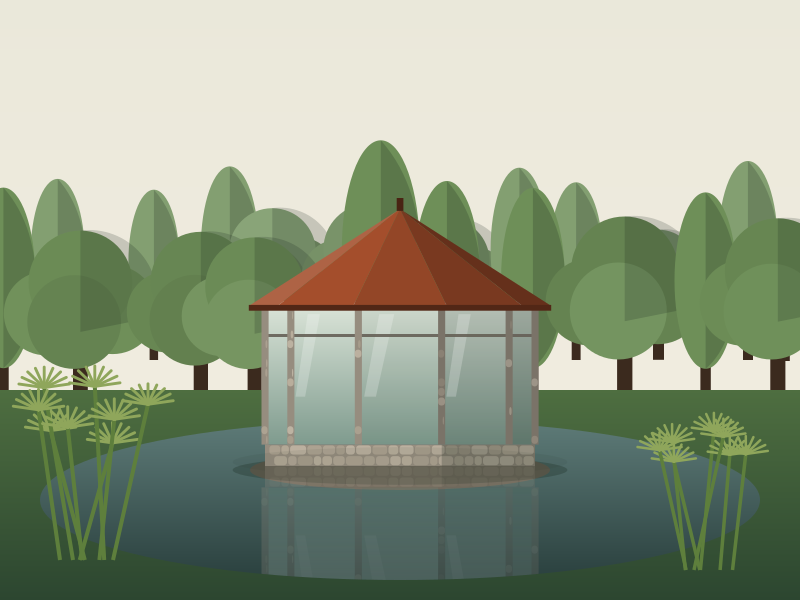

Garden tours
Agapanthus, euphorbia, peace lilies and giant papyrus, and one great tree wrapped in vines to its crown.

Long lunches outdoors, a drink at the Mill Bar, and a garden that runs down to the river and out to the forest.
The kitchen cooks everything from scratch. Eat on the lawns, under the acacias or in a private banda.
Because food is made fresh, meals take time. Pre-order lunch or dinner when you book, or message us an hour ahead.

Our ten-sided bar stands at the centre of the garden. Watch the match on the big screen, or take your drink out to the lawn as the lights come on.
Reserve a table
Hedged sitting areas, ponds between the trails, and plants on every log, wall and tree.
Agapanthus, euphorbia, peace lilies and giant papyrus, and one great tree wrapped in vines to its crown.

Forest birds come close to the garden, and trails lead out into the trees.

Terraces step down towards the river under acacia shade: a calm spot to stretch or spread a blanket.
This is a working farm. Ask to see the greenhouses, the fish ponds and the poultry, and meet the geese that patrol the lawns.
Kaptagat is one of Kenya's great running grounds. Clubs and athletes stay in our dormitories to train on the forest roads at altitude.
Ask about a training camp

Easy outings from the farm. Drive times are approximate.